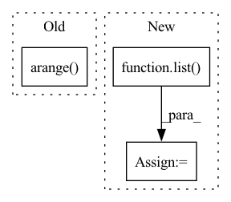

Pattern ID :10779
Before Change
for d in tqdm(self.datasets, desc="Loading LMDB datasets...")
])
idxs = np.arange( len(base_tr_dataset))
split_point = int(len(base_tr_dataset) * (1 - self.val_split))
np.random.shuffle(idxs)
tr_subset = Subset(base_tr_dataset, idxs[:split_point])After Change
// Performs train-validation split
split_point = int(len(tr_dataset) * (1 - self.val_split))
tr_subset = Subset(
tr_dataset, list( range(split_point))
)
val_subset = Subset(
val_dataset, list(range(split_point, len(tr_dataset)))In pattern: SUPERPATTERN
Frequency: 3
Non-data size: 3
Instances Fragment ID: 37158902
Project Name: microsoft/archai
Commit Name: d1dd0a59dc86ff271b12e111596b7cbefa2675d3
Time: 2022-12-16
Author: pierokauffmann@gmail.com
File Name: archai/datasets/providers/multi_lmdb_image_provider.py
M Class Name: MultiTensorpackLmdbImageProvider
N Class Name: MultiTensorpackLmdbImageProvider
M Method Name: get_train_val_datasets(3)
N Method Name: get_train_val_datasets(3)
M Parent Class: DatasetProvider
N Parent Class: DatasetProvider
M File Name: archai/datasets/providers/multi_lmdb_image_provider.py
N File Name: archai/datasets/providers/multi_lmdb_image_provider.py
M Start Line: 89
M End Line: 102
N Start Line: 89
N End Line: 113
Before Change
large = 20
ax.set_ylabel("Split //", fontsize=large)
ax.set_yticks(np.arange( self.n_splits) + 0.5)
ax.set_yticklabels(list(range(self.n_splits)))
ax.set_ylim(0 - 0.2, self.n_splits + 0.2)
ax.invert_yaxis()After Change
def plot(self, lw=20, fig_width=20):
_, ax = plt.subplots(figsize=(fig_width, self.n_splits))
// visualize the train/test windows for each split
tr_start = list()
tr_len = list()
// technically should be just self.forecast_len
tt_len = list()
yticks = list(range(self.n_splits)) Fragment ID: 37158887
Project Name: uber/orbit
Commit Name: 9b8570a11ca7a205c6bd3bd9711633d3b6815619
Time: 2021-07-27
Author: edwinng@uber.com
File Name: orbit/diagnostics/backtest.py
M Class Name: TimeSeriesSplitter
N Class Name: TimeSeriesSplitter
M Method Name: plot(3)
N Method Name: plot(3)
M Parent Class: object
N Parent Class: object
M File Name: orbit/diagnostics/backtest.py
N File Name: orbit/diagnostics/backtest.py
M Start Line: 167
M End Line: 197
N Start Line: 168
N End Line: 194
Before Change
indexes = np.where(A_u < 1)
indexes = np.c_[indexes[0],indexes[1]]
neg_index = rs.choice(np.arange( len(indexes)) , size=int(np.sum(A_u)))
neg_edges = indexes[neg_index].tolist()
len_val = int(prob_val*len(row))After Change
undirect_edge_index = to_undirected(edge_index)
neg_edges = negative_sampling(undirect_edge_index, force_undirected=False).numpy().T
neg_edges = map(tuple, neg_edges)
neg_edges = list( neg_edges)
len_val = int(prob_val*len(row))
len_test = int(prob_test*len(row))
Fragment ID: 37158889
Project Name: sherylhyx/pytorch_geometric_signed_directed
Commit Name: eeeffe159fa0bd2b54e276e7605f8aaa238d8202
Time: 2022-02-18
Author: xzhang15@wpi.edu
File Name: torch_geometric_signed_directed/utils/directed/directed_link_split.py
M Class Name: AnonimousClass
N Class Name: AnonimousClass
M Method Name: directed_link_class_split(8)
N Method Name: directed_link_class_split(8)
M Parent Class:
N Parent Class:
M File Name: torch_geometric_signed_directed/utils/directed/directed_link_split.py
N File Name: torch_geometric_signed_directed/utils/directed/directed_link_split.py
M Start Line: 104
M End Line: 168
N Start Line: 100
N End Line: 162